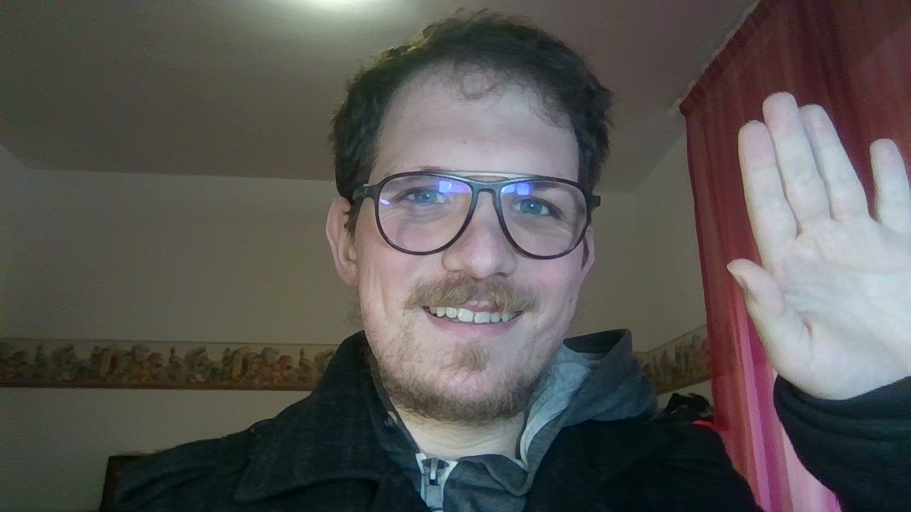

了解 Team Letizia 的愿景，以及推动我们创作之路的初心与热情。

你好！我是西蒙尼，一名专注且充满热情的开发者与叙事创作者，致力于通过视觉小说与JRPG构建独特的世界。我的作品深受日本经典作品的美学与精神启发，并始终力求为每个项目注入鲜明而独立的灵魂。
我的使命很简单：让宏大的故事与引人入胜的玩法真正鲜活起来。每一个项目，都是通往全新宇宙的桥梁，建立在富有挑战性的选择、令人难忘的角色，以及对玩家体验的极致用心之上。
凭借在游戏设计、角色美术与叙事开发方面扎实的背景，我希望创造的不仅是娱乐作品，更是能够深深触动人心、引发思考的体验。